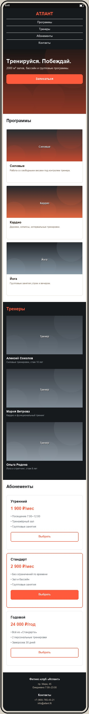

Макет мобильной версии
Файл макет-мобильный.jpg лежит в этой же папке. Сверстать нужно примерно по макету: тот же порядок блоков и общая структура, точные размеры не проверяются.

Рекомендации по мобильной версии
- Шапка. Логотип по центру, четыре пункта меню столбиком под ним:
.header-inner { flex-direction: column }, у.nav aубрать левый отступ, задать отступ снизу и центрирование. - Первый экран. Заголовок уменьшить до 30–32 px (
.hero h1), отступы секции сократить до 80–100 px. Кнопку «Записаться» растянуть на всю ширину контента. - Программы. Три карточки в один столбец:
.cards { flex-direction: column },.card { width: 100% }. - Тренеры. Карточки тренеров в один столбец:
.trainer { width: 100% }. Секция остаётся на тёмном фоне. - Абонементы. Тарифы друг под другом:
.price-card { width: 100% }. Порядок как на десктопе: «Утренний» → «Стандарт» → «Годовой». Бейдж «Выгодно» у центрального тарифа оставить. - Подвал. Две колонки столбиком по центру:
.footer-inner { flex-direction: column; text-align: center }.
Подсказка: все переопределения добавляются в конец
css/style.css внутри @media (max-width: 768px) { ... }. Секции с классом .cards три (программы, тренеры, тарифы) — одно правило для .cards и одно для ширины карточек закроет все три блока.
Проверка
- DevTools → Toggle device toolbar (Ctrl+Shift+M), ширина 375 px.
- Горизонтальной прокрутки нет.
- Порядок блоков совпадает с макетом: шапка → первый экран → программы → тренеры → абонементы → подвал.